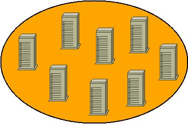

| GNU/Linux, software libre para la comunidad universitaria: Clustering y alta disponibilidad en GNU/Linux | ||
|---|---|---|
| Anterior | Siguiente | |
Clustering es la capacidad de varias máquinas para realizar una tarea como sí de una única máquina se tratase.
Cada una de las máquinas que forman el cluster recibe el nombre de nodo.

Cluster como un todo.